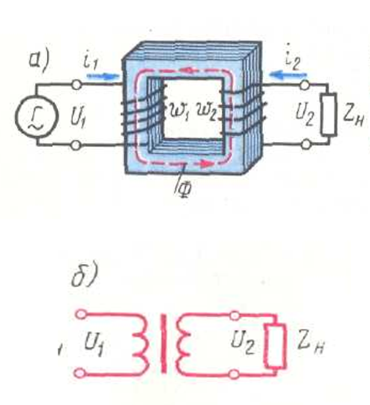
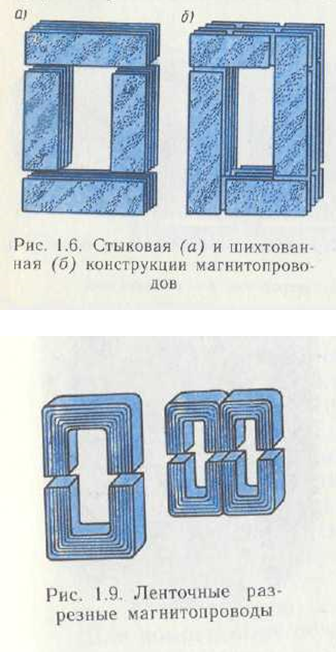
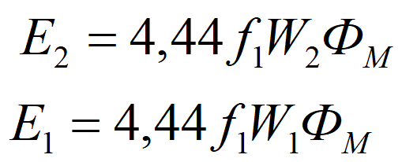
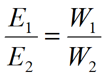
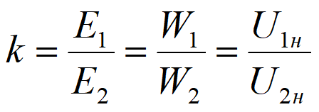
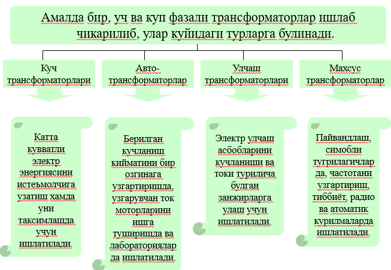
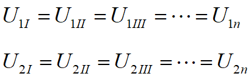
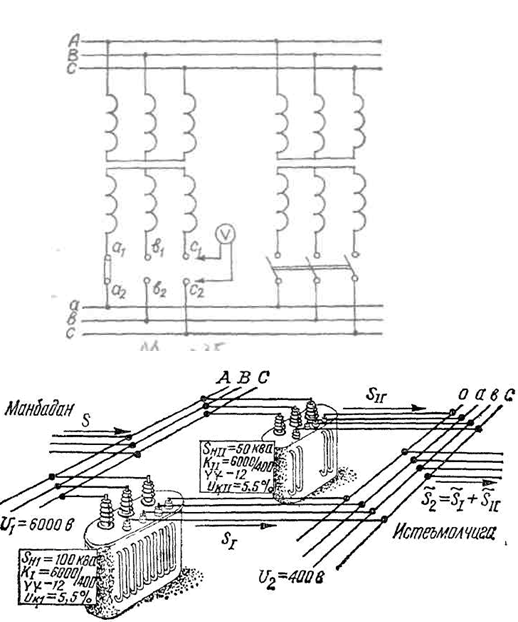

Режа:
1. Умумий тушунчалар.
2. Трансформаторнинг тузилиши ва ишлаш принципи.
3. Трансформаторнинг турлари.
4. Трансформатордаги қувват исрофлари ва унинг ФИК.
5. Трансформаторнинг номинал катталиклари.
6. Трансформаторларнинг параллел ишлаши.
Трансформатор-Ўзгарувчан ток кучини ўзгартириб берадиган электромагнит статик аппарат
Бунда трансформаторга берилган ва ундан олинган ўзгарувчан токнинг қуввати ва частотаси
ўзгармайди.
Энг оддий трансформатор қуриш учун ёпиқ занжирдан иборат бўлган пўлат ўзакка ўрамлари сони
турлича
бўлган иккита чўлғам ўрнатиш кифоя.
Электр тармоғидаги ёки генератордаги кучланишга ҳисобланган ва унга уланадиган чулғам бирламчи,
кучланишни ўзгартириб берадиган иккиламчи чулғам иккилмачи чулғам дейилади.
Бу чулғамларга тегишли миқдорлар ҳам тегишлича бирламчи ва иккиламчи деб юритилади.

1-расм. Трансформаторнинг (а) электромагнит ва (б) принципиаль схемаси

Агарда бирламчи чулғамга U1 кучланиш берилса, у ҳолда ўзгарувчан I1 токи ва, демак, ўзгарувчан
магнит оқими ҳосил бўлади. Бу магнит оқимнинг бирламчи ва иккиламчи чулғамлар билан илашиши
натижасида электромагнит индукция қонунига биноан бирламчи E1 ва иккиламчи E2 ЭЮКлар ҳосил бўлади.
Ҳосил бўлган ЭЮК лар қиймати қуйидагича аниқланади.

бунда f1 – электр тармоғидаги кучланишнинг частоаси.
ФМ – пўлат ўзакда ҳосил бўлган магнит оқимининг максимал қиймати
(1) ва (2) формулаларга биноан куйидаги нисбатни олиш мумкин, яъни

Демак, бирламчи ва иккилами чулгамларда хосил буладиган ЭЮК лар нисбатини чулгамлардаги урамлар сони
нисбати билан аниклаш мумкин.
Юкори кучланишли чулгамда хосил булган ЭЮК нинг паст кучланишли чулгамда хосил булган ЭЮК га
нисбати
трансформаторнинг трранцформация коэфициенти деб аталади ва k харфи билан белгиланади.
Агар юкори кучланишли чулгам бирламчи булиб, паст кучланишлиси иккиламчи булса, у холда
трансформаторнинг трансформация коэффициенти куйидагича аникланади:

Демак, трансформаторнинг трансформация коэффициентини унинг бирламчи ва иккиламяи чулгамларининг
салт иш режимидаги номинал кучланиши балан хам аниклаш мумкин.

3. Трансформаторнинг конструкциясига боғлиқ бўлган қувват исрофи. Булардан мис чулғамларидаги қувват
исрофи ҳамда пўлат ўзакдаги қувват исрофи асосий исрофлар ҳисобланади.
Мис чулғамларидаги қувват исрофлари нагрузкага боғлиқ бўлгани учун ўзгарувчан ҳисобланади;
Пўлат ўзакдаги қувват исрофлари трансформаторнинг иш жараёнида номинал кучланиш чегарасида
ўзгармасдир.
Трансформаторлардан нормал фойдаланиш мақсадида унинг паспортида қуйидаги номинал катталиклар
кўрсатилган бўлади:
Трансформаторнинг тури;
Чиқиш томонидаги номинал қувват;
Бирламчи ва иккиламчи чулғамларнинг номинал линия кучланишлари;
Салт ишлагандаги қувват исрофи;
Мис чулғамлардаги қувват исрофи;
Қисқа туташув кучланиши;
Нагрузка номинал ва унинг ярмига тенг ҳамда қувват коэффициенти бирга тенга бўлгандаги ФИКти.
Трансформаторни парраллел улаш
Биринчи холат
Трансформаторнинг қуввати истеъмолчиларга етарли бўлмаса икки ва ундан кўп уч фазали
трансформаторлар параллел ишлашга уланади.
Иккинчи холат
Узатилиш керак бўлган қувват трансформаторникидан катта бўлса икки ва ундан кўп уч фазали
трансформаторлар параллел ишлашга уланади.
Трансформаторларни параллел улашда трансформаторларнинг бирламчи чулғамлари уларга умумий бўлган
бирламчи электр тармоғига уланса, иккиламчилари эса иккиламчи тармоққа уланади.
Трансформаторни парраллел улаш шартлари
Биринчи шарт
Параллел уланадиган трансформаторларнинг бирламчи ва иккиламчи чулғамларининг номинал
кучланишлари ўзаро тенг бўлиши зарур.

Бунда уларнинг трансформация коэффициентлари ҳам тенг бўлиши керак.
Уч фазали трансформаторнинг парраллел ишлашга уланиш схемаси
